Kofu, Tottori: things to do, food and stays
Kofu · Tottori
Kofu
Highlighted on the Tottori map.
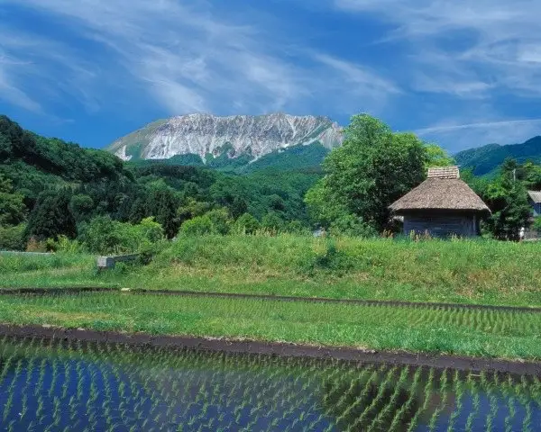
Stay
休暇村 奥大山
Kyukamura Oku Oyama
Inn in Otsukue, Kofu with a quiet countryside setting.
Dining
お食事処 なないろ樫
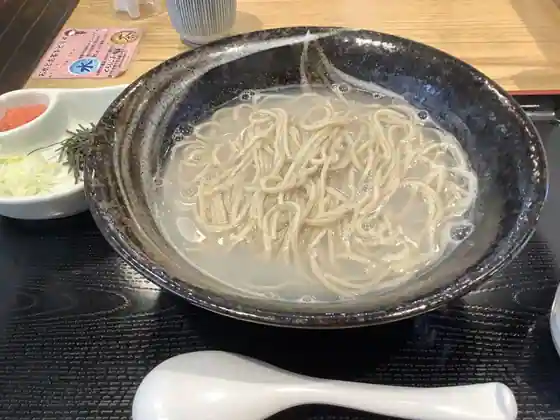
O Shokuji Tokoro Nanairo Kashi
道の駅 奥大山
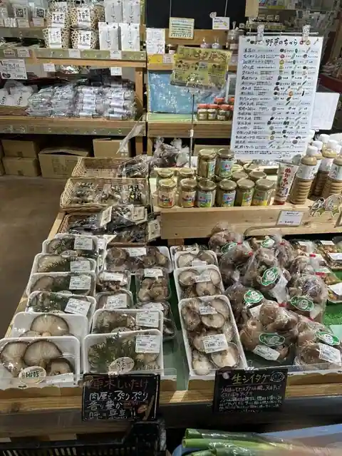
Michi No Eki Oku Oyama
カフェテリア・アペゼ
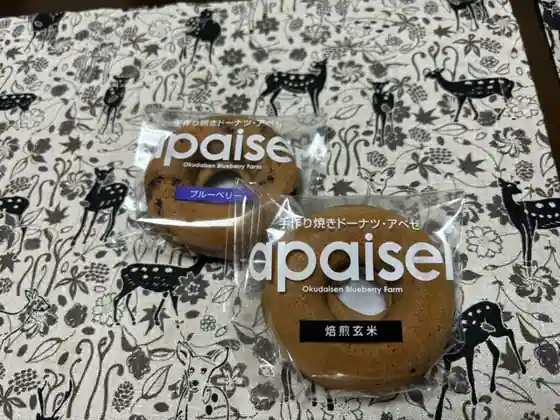
Cafe Teria Apeze
ビストロノブ
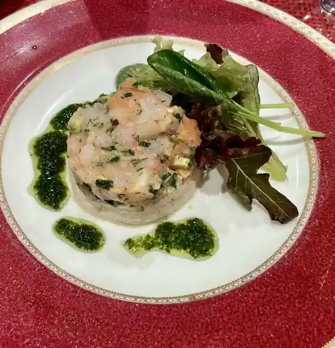
Bistro Nobu
奥大山マルシェ
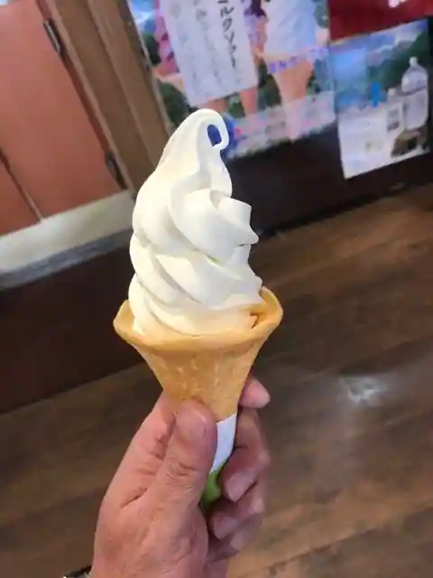
Oku Oyama Marushie
こだち
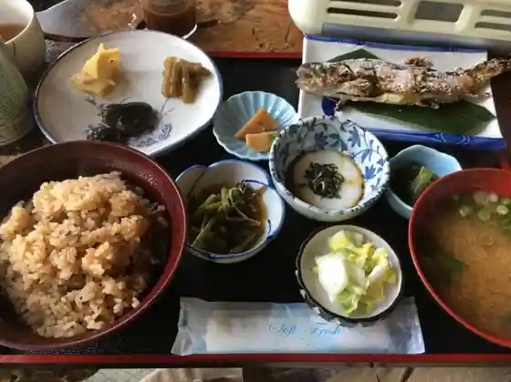
Kodachi
エミーズカフェ
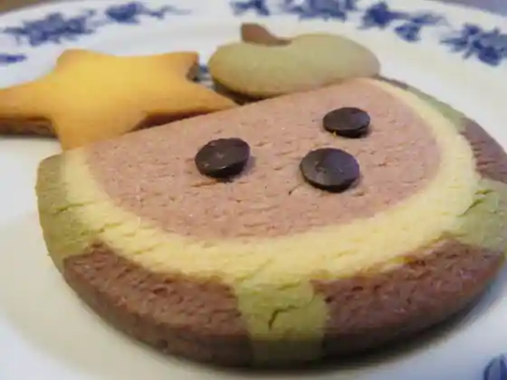
Emizu Cafe
旅館米子屋
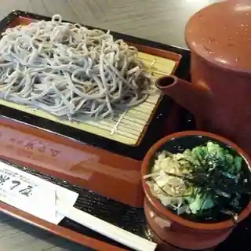
Ryokan Yonago Ya
H.ALNOYUZ
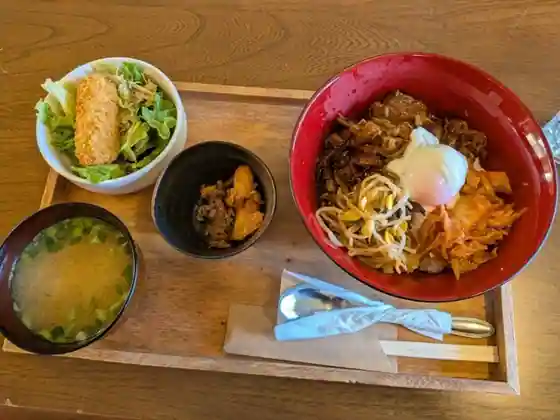
H. ALNOYUZ
おかもと旅館
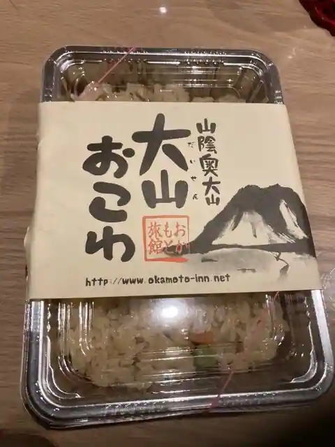
Okamoto Ryokan
Sights
Oku Oyama O Tsukue
Hotaru Kari Experience
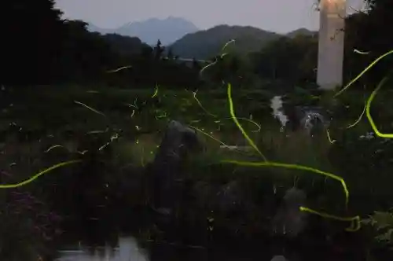
Oku Oyama no Ryokan
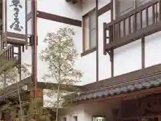
Oyama Hiruzen to Shizen to Fukei Wo Mamoru Guraundowaku Jissen Tour
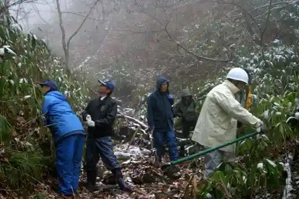
Satoyama to Hitozato Wo Tazune Ru Oyama Michi Torekkingu
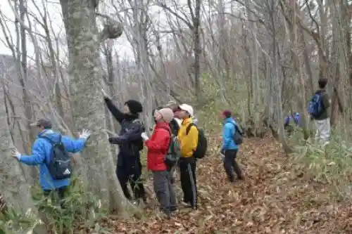